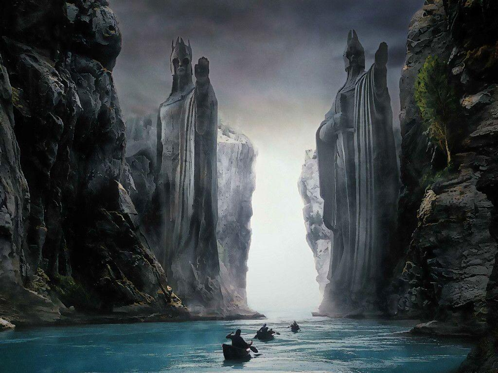
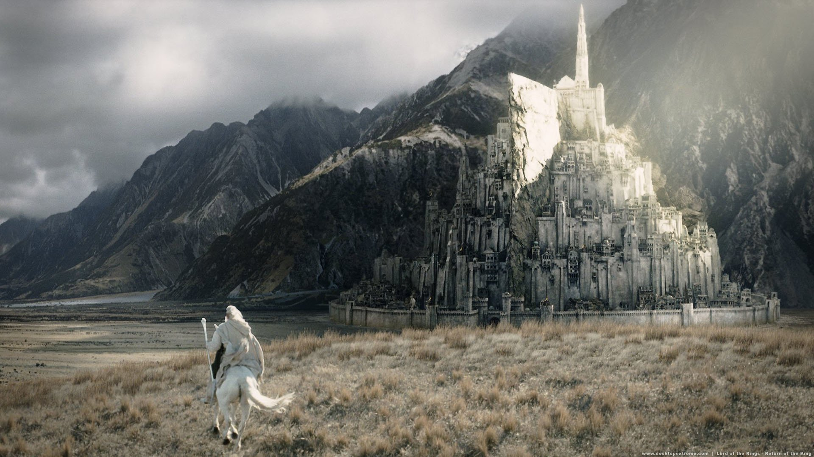
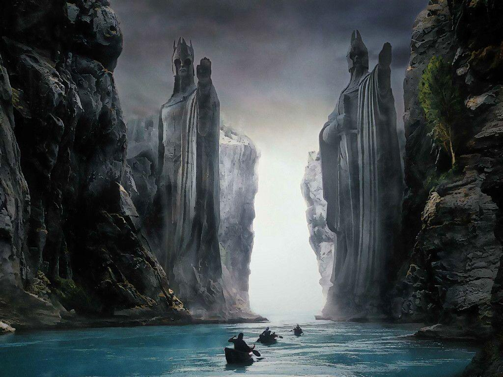
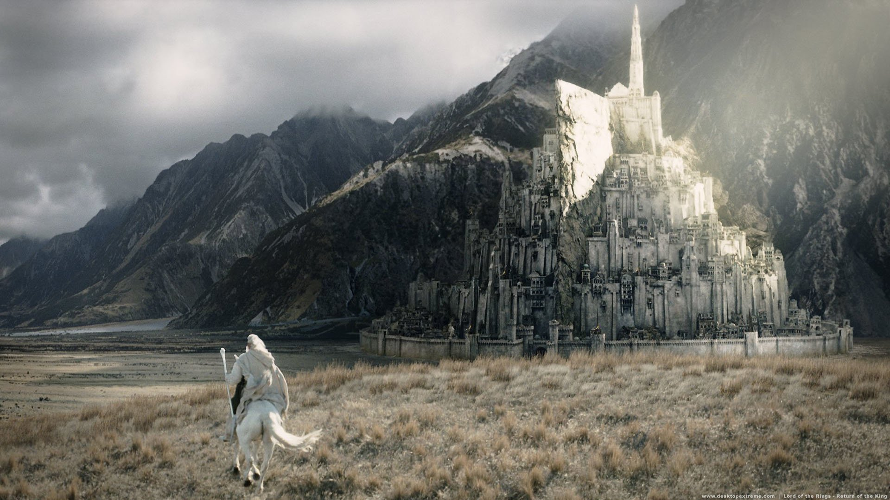

YÜZÜKLERİN EFENDİSİ:YÜZÜK KARDEŞLİĞİ
FİLM GALERİSİ
 



HAKKINDA
Yüzüklerin Efendisi: Yüzük Kardeşliği, dünyanın kaderini değişterecek olan yüzükten kurtulmak için verilen mücadeleyi konu ediyor. Yıllar önce üretilen ve Orta Dünya topraklarına kandan başka hiçbir şey getirmeyen yüzüklerin sonuncusu, üretiminden yüz yıllar sonra ortaya çıkar. Amcasının kendisine emanet ettiği yüzüğün nelere kadir olduğundan habersiz olan Frodo, büyücü Gandalf'ın anlattıkları sonrasında dehşete kapılır. Bu yüzükten ve müstakbel savaşlardan kurtulmanın tek yolu, gücünü toplamaya çalışan Sauron'u da engellemek için bu yüzüğü yok etmektir. Yüzüğü yok edilebileceği tek yer olan Mordor'a götürmek için kendini feda eden savaşçılardan oluşan bir ekip oluşturulur. Çok uzun ve çetin geçecek olan yolculuk başlar. Orta Dünya'nın kaderi, bu insanların ellerindedir.
Film İstatistikleri
İzlenme Oranı
IMDb Puanı
Eleştirmen İncelemesi
Kullanıcı Yorumu
Beğenme
Oyuncular
Elijah Wood
Frodo Baggins
Ian McKellen
Gandalf
Sean Astin
Samwise Gamgee

Viggo Mortensen
Aragorn
Orlando Bloom
Legolas
John Rhys-Davies
Gimli

Liv Tyler
Arwen
Cate Blanchett
Galadriel